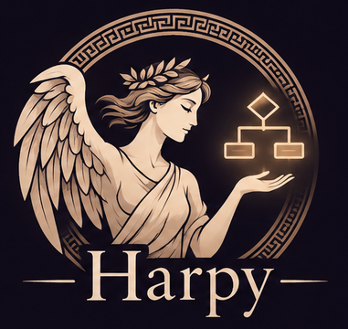

Mermaid-compatible · step by step
Diagrams that unfold, one step at a time.
Write diagrams in the Mermaid syntax you already know. Mark the steps, narrate each one in Markdown, and let readers follow the story instead of decoding it all at once.

The idea
Reveal the diagram the way you would explain it
Each step lights up what it adds. What came before steps back, and the summary brings the whole picture back. Colours tell you who is responsible for what.
The syntax
Write it like Mermaid. Narrate it in Markdown.
# Checkout, end to end
```harpy
flowchart LR
%% @step browse "In the browser"
subgraph FE [Storefront]
U([Customer]) --> C[Cart]
end
%% @step pay "Paying" focus=P
subgraph API [Order service]
C --> P{Payment OK?}
P -->|yes| O[Create order]
P -->|no| R[Show error]
end
R -.-> C
%% @step persist "Persisting"
O --> DB[(Orders DB)]
…
```
## browse
The customer adds items…
## summary
Three teams, three colours…- I
Steps are comments
%% @steplines are Mermaid comments, so the same source still renders anywhere Mermaid does, including GitHub. - II
Narration is Markdown
A
## step-idsection after the diagram describes that step, with links, emphasis and code. - III
Focus where it matters
focus=,show=andhide=point attention at specific nodes, edges or participants. - IV
Colour by responsibility
Each
subgraphand sequenceboxgets its own colour. Pick one withclass API lapisorbox lapis Client. - V
A summary closes the story
## summarybrings back the whole diagram with its conclusion.
Sequence diagrams
Every message, in the order it happens
One script tag
No build step. Import the module and write a <harpy-diagram>.
A live editor
Switch to side by side and edit the source while the diagram redraws.
Mermaid syntax
Flowcharts and sequence diagrams, written the way you already write them.
Built to narrate
Every step has its own words, and the summary ties them together.
Get started
Drop it into any page
Add the script, then put your document in a <harpy-diagram>. Use mode="split" to show the editor next to the diagram.
Harpy is in early development. It draws flowcharts and sequence diagrams with its own renderer; more diagram types will follow.
<!-- Load Harpy once per page -->
<script type="module" src="harpy/src/harpy.js"></script>
<harpy-diagram mode="preview">
<script type="text/harpy">
```harpy
sequenceDiagram
%% @step ask "The question"
Reader->>Harpy: What happens here?
%% @step answer "The answer"
Harpy-->>Reader: One step at a time.
```
## ask
Every step gets its own narration.
</script>
</harpy-diagram>